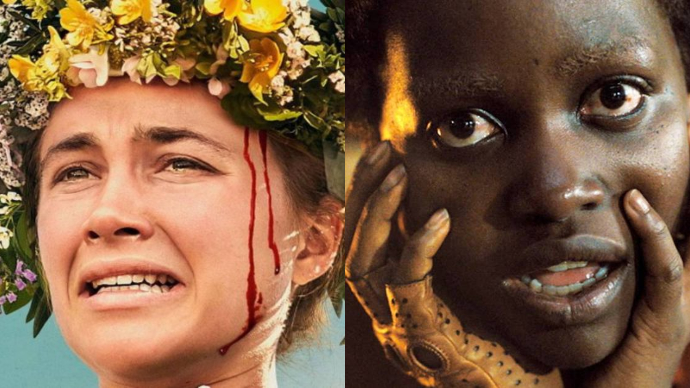
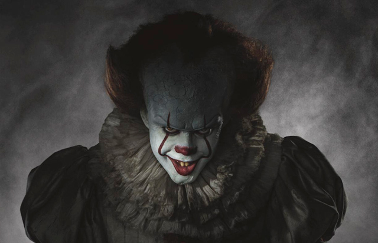
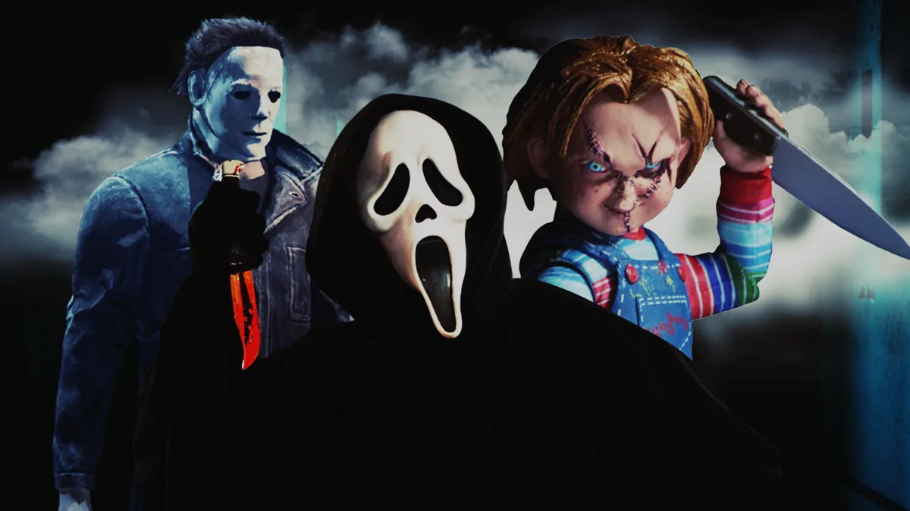

Saiba mais sobre Terror
Curso 100% gratuito

Terror psicológico é um subgênero que foca no medo e na tensão gerados pela mente humana, explorando conflitos internos, vulnerabilidades emocionais e distorções da realidade, em vez de recorrer a monstros ou violência gráfica. Elementos como dúvida, paranoia, manipulação e a dificuldade dos personagens em distinguir o real do ilusório são centrais para criar angústia e desconforto no público.
Saiba mais
Terror sobrenatural é um subgênero do terror que explora forças e eventos que desafiam as leis da natureza, como fantasmas, demônios, maldições, possessões e casas mal-assombradas. Ele se baseia em entidades e ocorrências paranormais para gerar medo, muitas vezes utilizando elementos religiosos e o medo do desconhecido e do inexplicável.
Saiba mais
Terror slasher é um subgênero do terror focado em um assassino psicopata que persegue e mata um grupo de vítimas, geralmente jovens, usando armas cortantes. Os filmes costumam ter cenas sangrentas, um assassino mascarado, e uma sobrevivente final (a "Final Girl") que enfrenta o vilão. Exemplos notáveis incluem os vilões de Halloween, Sexta-Feira 13 e A Hora do Pesadelo.
Saiba mais